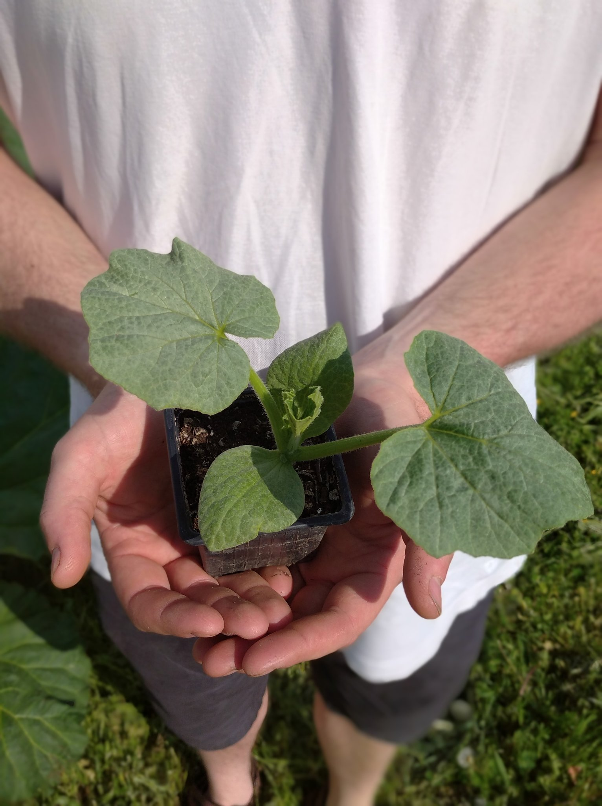
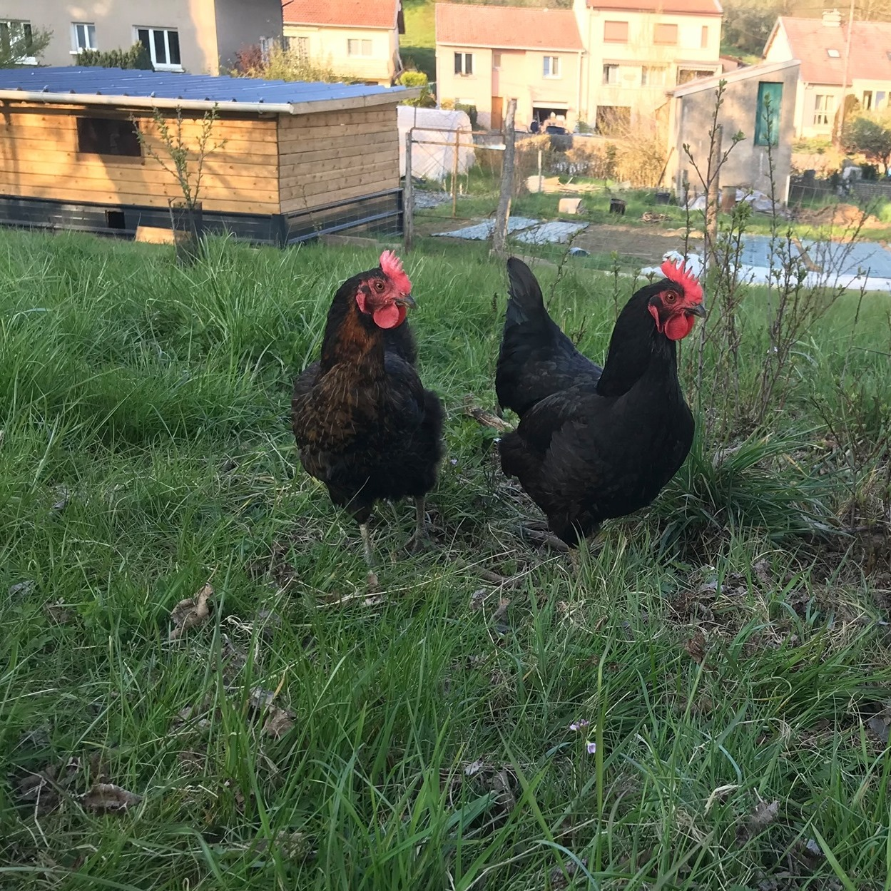
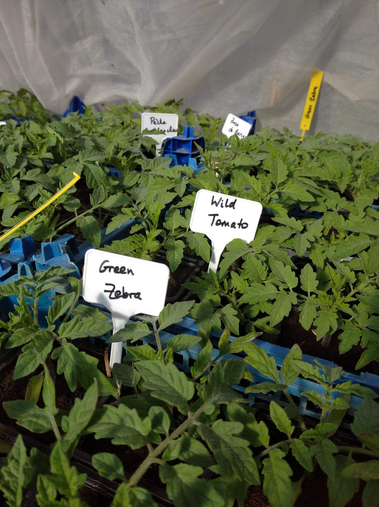
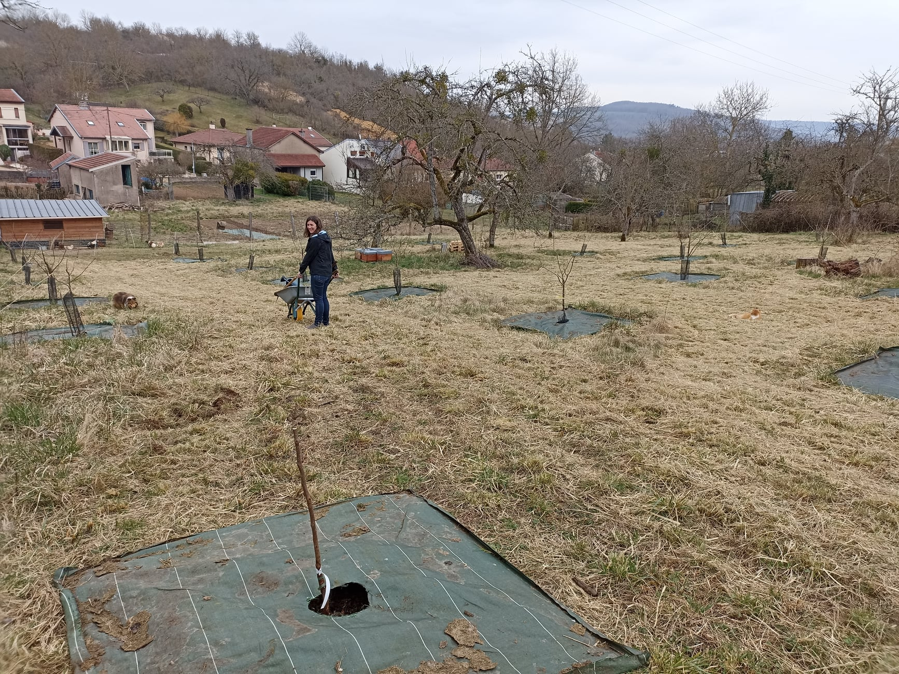

Bienvenue sur notre page !
Le Jardin des Anciens est un projet qui a germé au printemps 2020. Dans ce grand jardin situé à Dieulouard sont cultivés des fruits et des légumes depuis plusieurs générations... Des abeilles noires et des poules ont rejoint l’aventure et parcourent le verger de la micro-ferme. Passionnés par l’agriculture vivrière, nous proposons à la vente les plants potagers semés par nos soins, pour partager le plaisir de produire soi-même de la nourriture saine et goûtue !

Poulailler
Le Jardin des Anciens est un projet qui a germé au printemps 2020. Dans ce grand jardin situé à Dieulouard sont cultivés des fruits et des légumes depuis plusieurs générations... Des abeilles noires et des poules ont rejoint l’aventure et parcourent le verger de la micro-ferme. Passionnés par l’agriculture vivrière, nous proposons à la vente les plants potagers semés par nos soins, pour partager le plaisir de produire soi-même de la nourriture saine et goûtue !

Plants
Le Jardin des Anciens est un projet qui a germé au printemps 2020. Dans ce grand jardin situé à Dieulouard sont cultivés des fruits et des légumes depuis plusieurs générations... Des abeilles noires et des poules ont rejoint l’aventure et parcourent le verger de la micro-ferme. Passionnés par l’agriculture vivrière, nous proposons à la vente les plants potagers semés par nos soins, pour partager le plaisir de produire soi-même de la nourriture saine et goûtue !

Verger
Le Jardin des Anciens est un projet qui a germé au printemps 2020. Dans ce grand jardin situé à Dieulouard sont cultivés des fruits et des légumes depuis plusieurs générations... Des abeilles noires et des poules ont rejoint l’aventure et parcourent le verger de la micro-ferme. Passionnés par l’agriculture vivrière, nous proposons à la vente les plants potagers semés par nos soins, pour partager le plaisir de produire soi-même de la nourriture saine et goûtue !